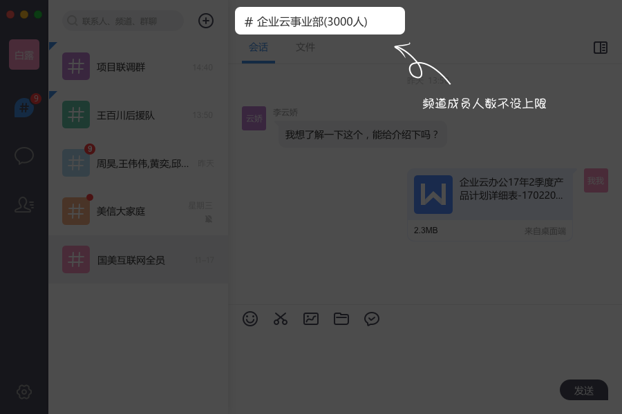
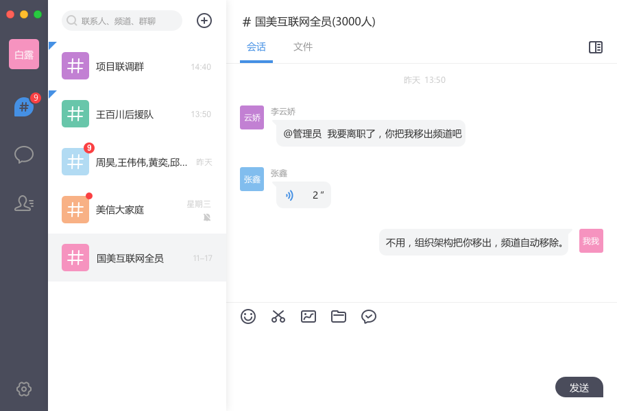
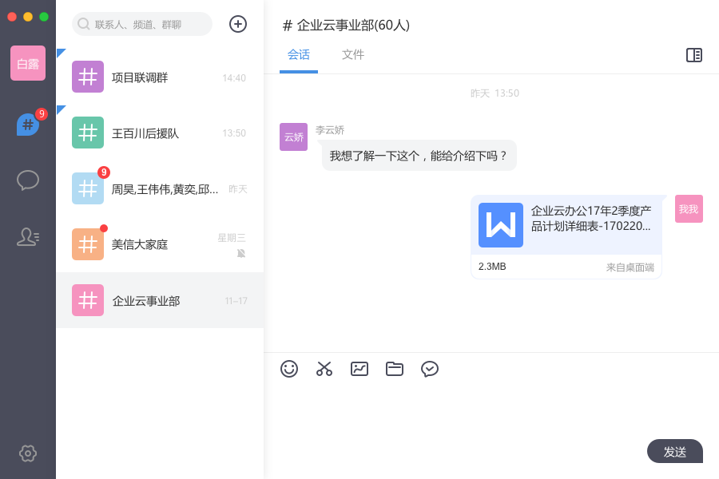
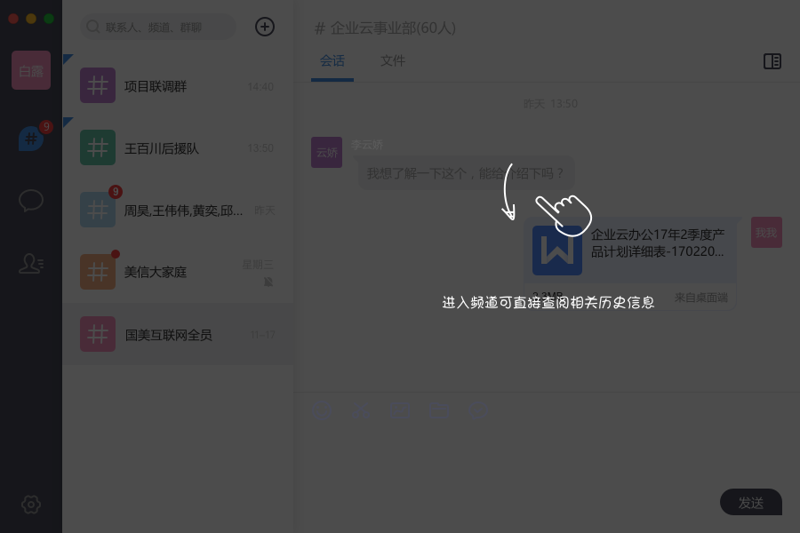
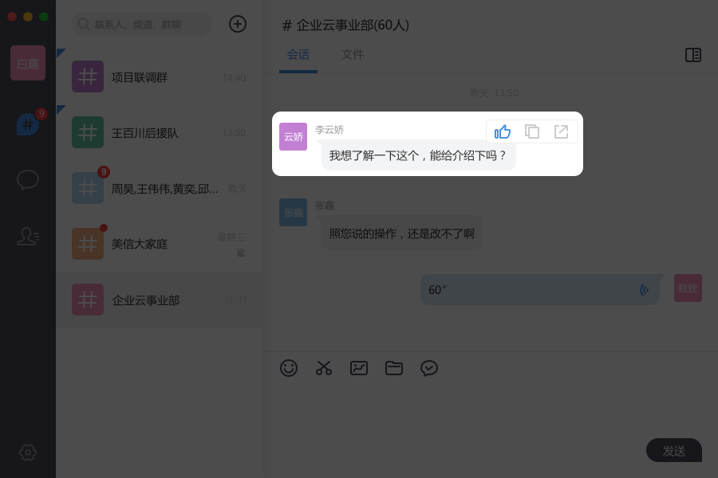
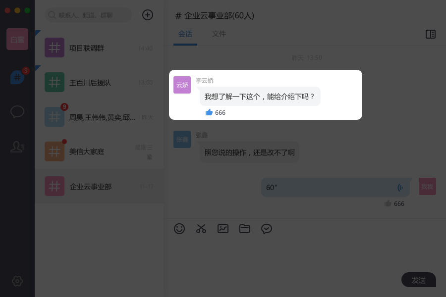
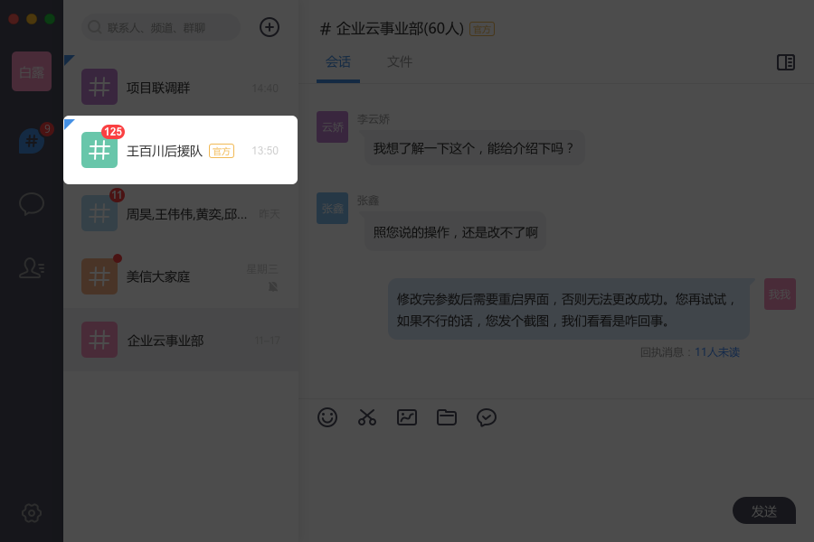
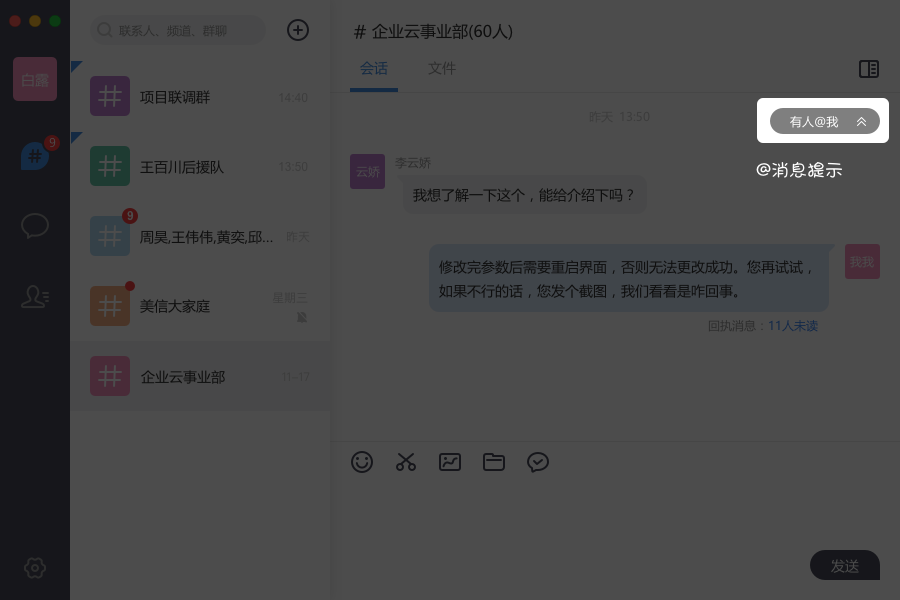
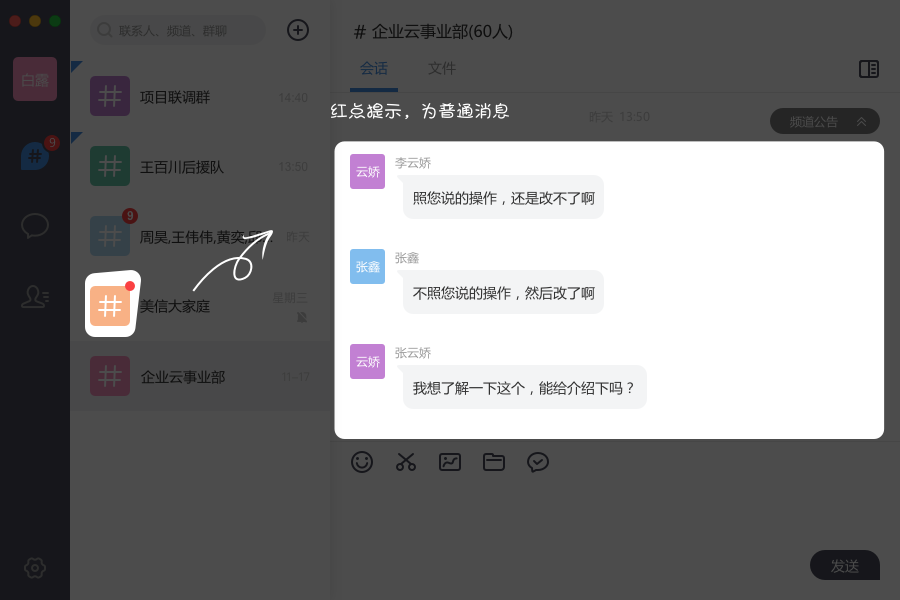
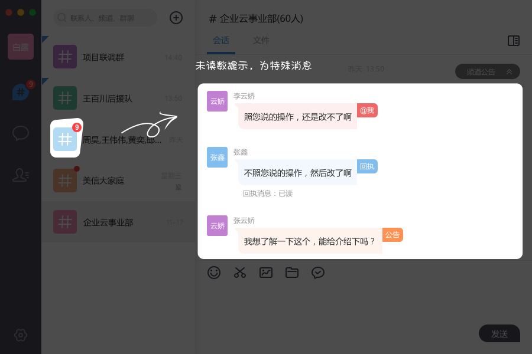

Aeromind1.1.0 for Mac 全新上线团队智能频道功能！
发布日期：2017-8-17 发布版本：v1.1.0
1.什么是频道？
频道，全称「团队智能频道」，专为企业场景量身设计的新型多人沟通及协作方式。她能够有效地提高沟通效率、简化管理。具有“成员列表自动更新免维护”；“成员人数不设上限”；“消息永久保存云端，新成员可直接查看历史数据”；“消息提醒方式依信息类型区别，简洁准确少干扰”；“聚合多种应用信息，一处登录全局处理”等多种特色亮点功能。
2.频道支持大规模企业的全员沟通

3.依据管理员设定的条件，可智能创建频道，并动态维护成员列表；同时与组织架构同步，入职即加入，离职即退出。

4.频道中的历史信息及文档可永久保存。新人加入频道后，可直接查阅相关历史记录。


5.频道里的消息，可以点赞哦


6.频道分为官方频道和个人频道。本期版本只包含官方频道，是由企业管理员创建和维护。而个人频道是由每个人自己创建的，下期版本会上线个人频道功能！

7.频道默认只提醒特殊类型的重要消息，如消息回执、@某人、公告这类特殊消息才算做未读数哦，避免无效消息对你的干扰以及流量的耗费。



8.频道的好，你需要慢慢发现~
频道会陆续推出更多有趣好玩，又提高工作效率的功能哦，如主题消息，定时提醒，频道归档等；还会整合其他应用,如wiki，jira，邮箱等，满足在频道中一站式处理各类办公信息的需求。